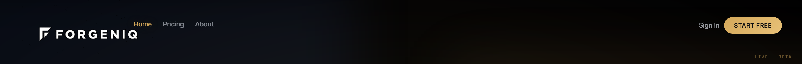
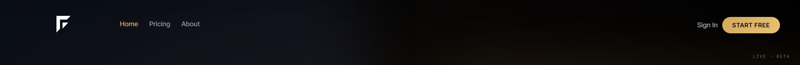
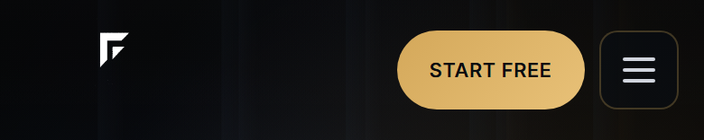
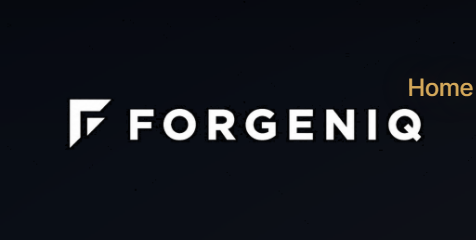
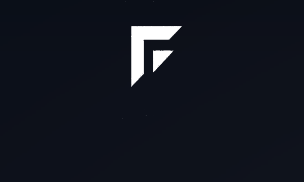
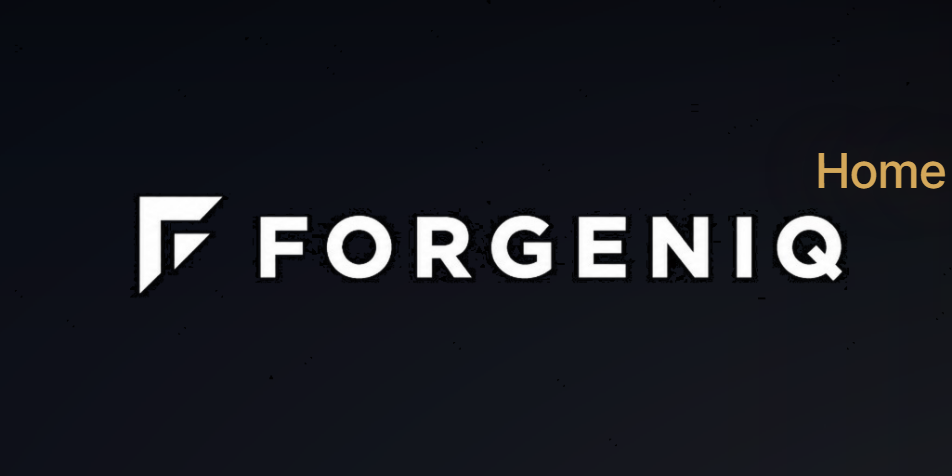
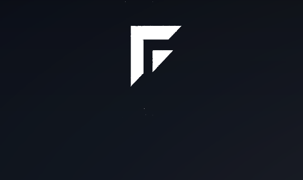
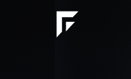
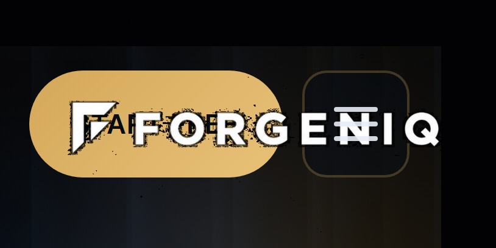
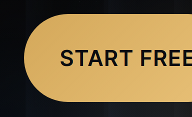

Desktop header · 1440px
Current

Variation 1

Symbol unchanged · wordmark is path-based SVG (Inter Tight 700 outlines) — no PNG crop, no duplicate-layer bold. Left = Current horizontal lockup. Right = Variation 1 stacked layout.
Not approved · Not deployedforgeniq-symbol-white.pngforgeniq-wordmark.svg path vectordebug/logo-variation-preview/ only









